gitによるタスク管理¶
各種用語¶
Issue/Epic/Milestone/Roadmapについては20分で理解する！GitLabのイシュー、エピック、マイルストーン、ロードマップ概要がわかりやすい。
Issue¶
やることリストで、階層構造にすることはできない。
細かいタスクレベルの粒度でIssueは切って良いと思う。次に説明するEpicでIssueをまとめて粒度を設定できるので
Epic¶
複数のIssueを意味のある単位で階層構造で理解するための機能。
ポイントとして、この後説明するマイルストーンが時系列ベースでタスクを管理する機能なので、意味のある単位で整理するためにEpicは利用される。
Epicは階層構造を構成することが可能なため、以下のような構造にできる
- 親エピック
- 子エピック1
- Issue1
- Issue2
- Issue3
- Issue4
- Issue5
- 子エピック2
- Issue6
- Issue7
- Issue8
- Issue9
MileStone¶
リリースなどのスケジュールに基づいてIssueを管理するための機能がマイルストーン。
Issueや関連するMargeRequestベースで進捗を管理することができる。
リリースの予定をマイルストーンとして作成して、そのマイルストーンに関連するIssueを紐づけることで、完了しているIssue、OpenのIssue、MRの数などを可視化することができる。具体的にはIssueを対象としたバーンダウンチャートのようなものを書いてくれる。
EpicとMileStoneの違いは以下のイメージ
- 親エピック
- 子エピック1
- Issue1(マイルストーンα)
- Issue2(マイルストーンα)
- Issue3(マイルストーンα)
- Issue4(マイルストーンβ)
- Issue5(マイルストーンβ)
- 子エピック2
- Issue6(マイルストーンα)
- Issue7(マイルストーンα)
- Issue8(マイルストーンβ)
- Issue9(マイルストーンβ)
ロードマップ¶
エピックとマイルストーンをガントチャート形式で視覚化するための機能。 以下の例のようにマイルストーンを確認しつつ、各Epicごとの進捗率を確認することができる。
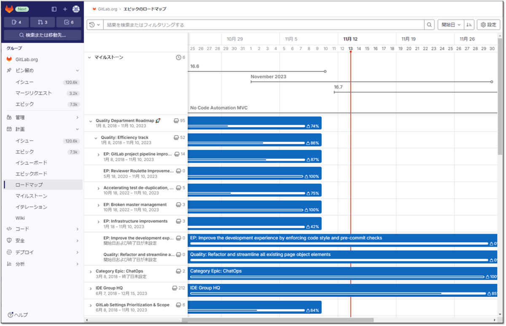 引用サイト
基本設定¶
gitの設定¶
gitlabのアカウント作成からsshキーを利用したgitcloneまでは 【git】SSH認証キーをGitLabに登録してclone を参考にして設定すると良い。githubとgitlabをどちらも利用できるようになる。
Issueの使い方¶
Labelの利用¶
管理>ラベルから、新しいラベルの作成を選択して作成する 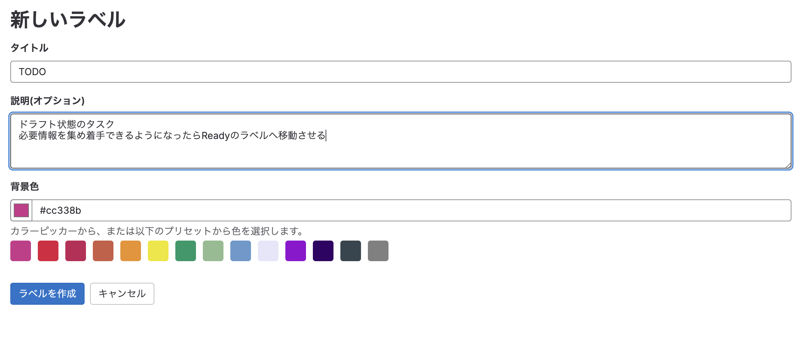
タスクの着手状況を管理するためにタスク状況管理ラベルを作成する 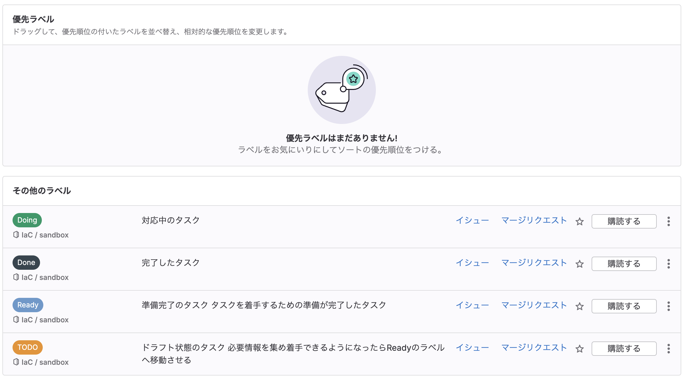
各Issueにラベルを付与することができるようになる。
以下のようなラベルがおすすめ
Open（作成）：Issueがオープンされた状態で、思いついたことを書いておく
TODO（作成）：近々着手の必要があり、議題に挙げていく必要があること
Ready（作成）：着手するための情報が全て出揃い、着手可能なステータス
Doing（作成）：現在着手中
Close(デフォルト)：Issueが完了した場合
issueからブランチを作成¶
GitLab(またはGitHub) Issueを用いた開発手順
PJのナビゲーションペインからIssuesを選択
Newissueを作成
Titleは英語でキャメルにするのがおすすめ。
後で作成するBranchNameが一致する
担当者・締切・マイルストーン・ラベルが設定可能。どのように利用するかは調査 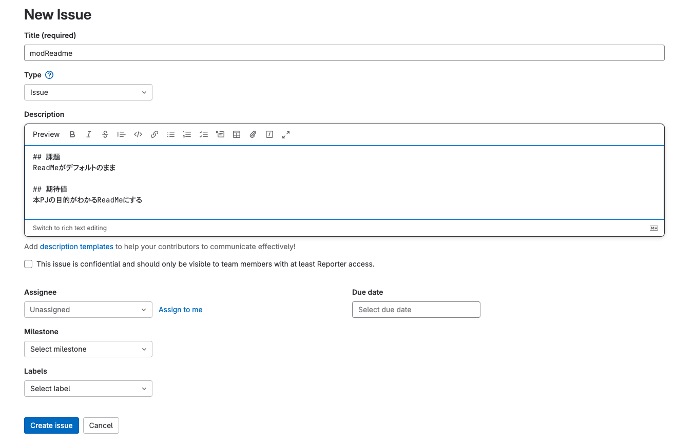
ブランチ作成
作成したIssueからCreateBranchでブランチが作成できる 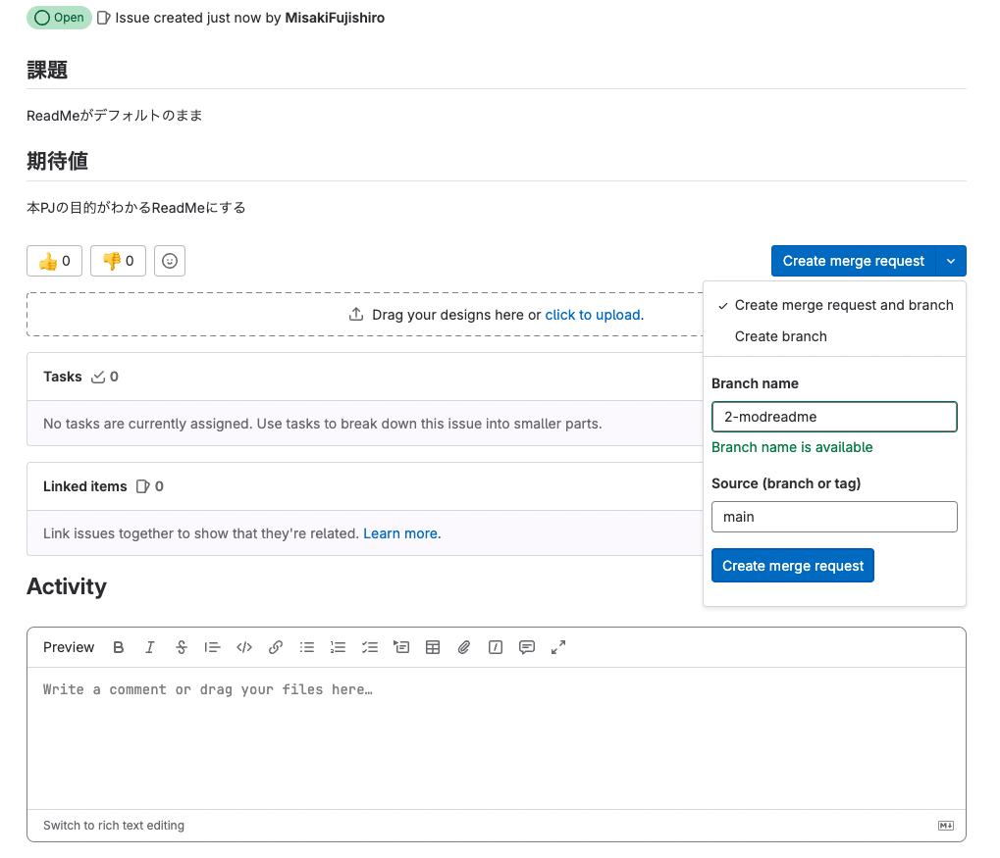
コミットでissueとの紐付け
#{ISSUE_NUM}と指定するとgitlabのGUIでは参照される
マージリクエスト
自動でClose#{USSUE_NUM}を指定してくれる 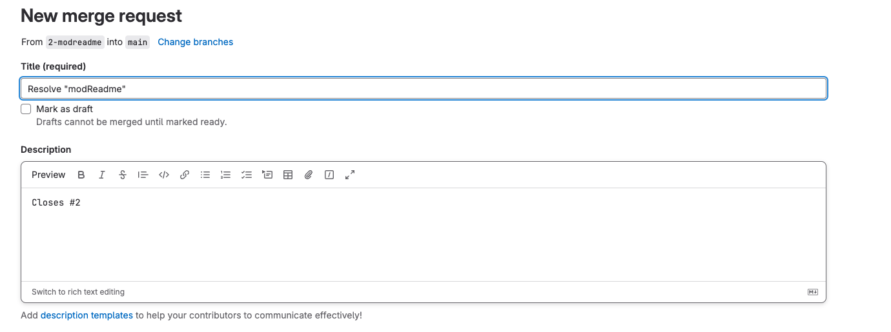
マージすると自動で、Closeされる。
kanbanの利用¶
Issueの管理にIssue Boardを利用するとGUIでkanbanでタスク管理をすることができる。
kanbanで利用したいタグは事前にIssueのLabelとして定義しておく。
デフォルトでkanbanにはIssueのOpenとCloseが設定されている。これは、ボードの編集からオフにすることができる。 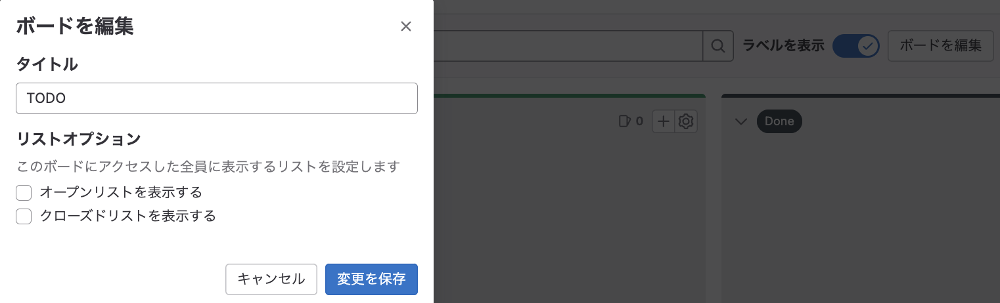
リストを作成から、事前に作成したLabelをkanbanのセクションにすることができる 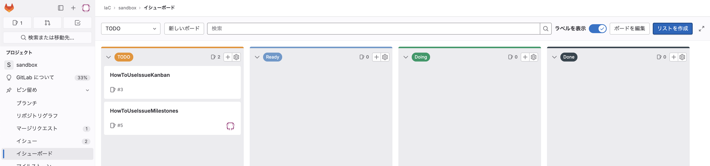
Milestoneの使い方¶
Milestoneを作成する。 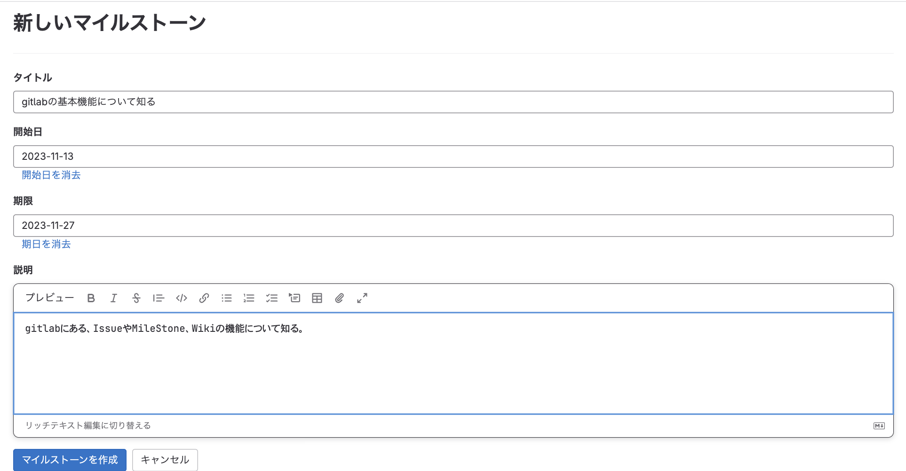
Issue側で、マイルストーンを紐づけることができるので、作成してMilestoneに紐づける。 紐付ける事でIssueがMileStone上で管理され、Issueの進捗率やIssueで登録した見積もりと経過時間を統合して確認することができる。
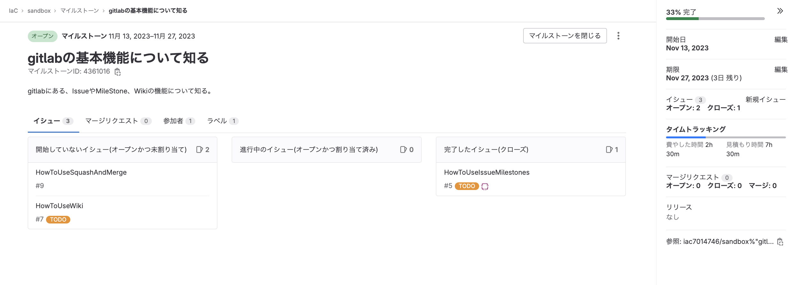
Wikiの使い方¶
Homeの設定¶
gitlabのwikiから「最初のページを設定」を押下して作成する。
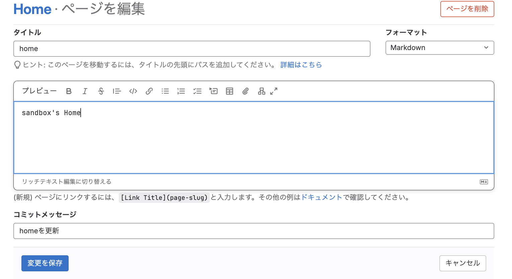
Wikiアクセス時の最初の画面になる。 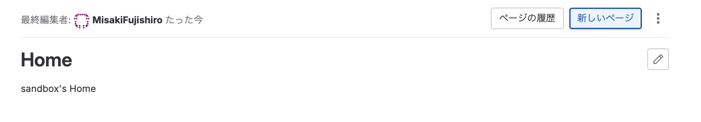
Homeから、新規で作成したページなどに参照を貼りたい場合は[[Path/To/Page]]のように記述する。
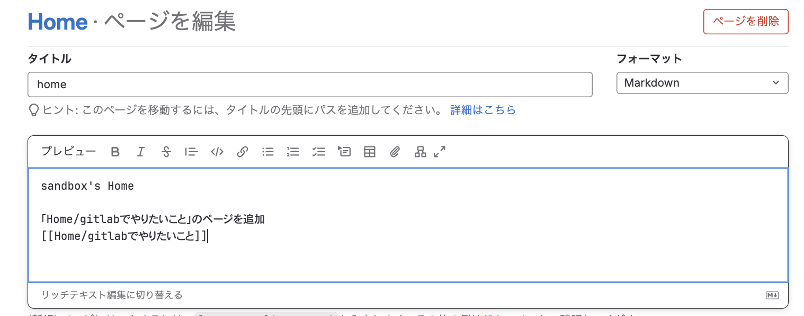
配下のページ設定¶
新しいページを作成というボタンから、ページを作成することができる。
作成時に、階層構造を設定することで作成されるページを階層構造にすることができる。
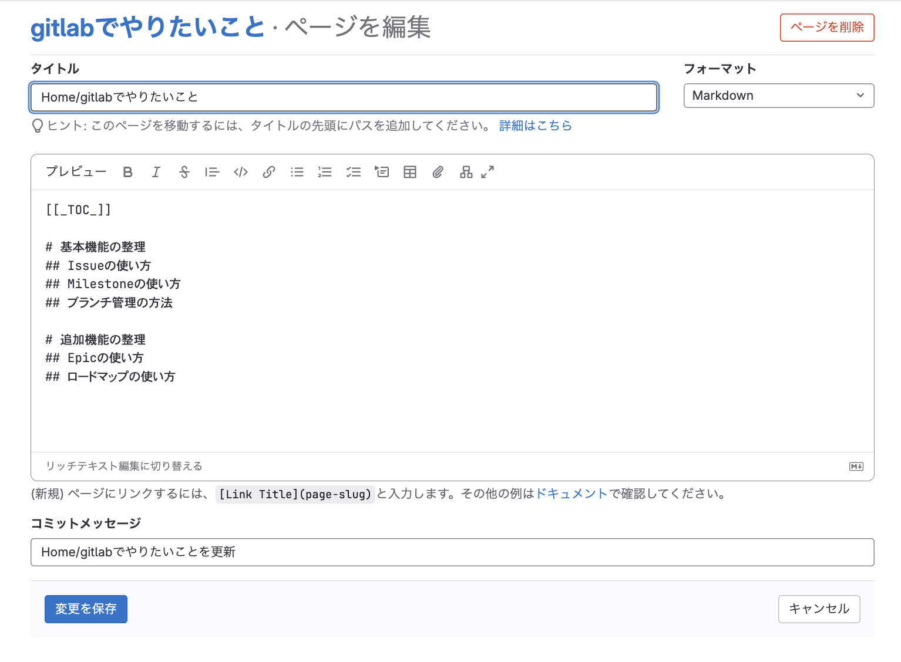
先頭に[[_TOC_]]を追加することで目次を自動生成してくれる。
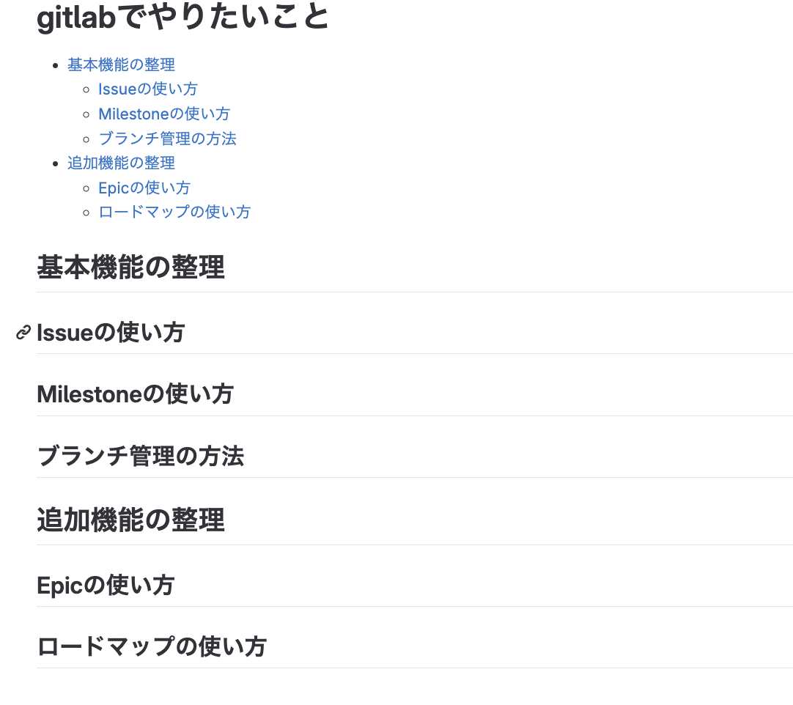
Wikiの履歴による管理¶
Wikiに変更を加えた場合、ページの履歴に変更内容を残すことができるので、Wiki管理が楽になる。 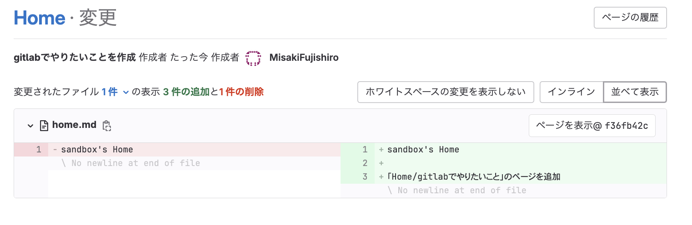
MargeRequest¶
Draftを利用したマージリクエスト¶
issueからブランチを作成する際に、マージリクエストを作成という機能もある。
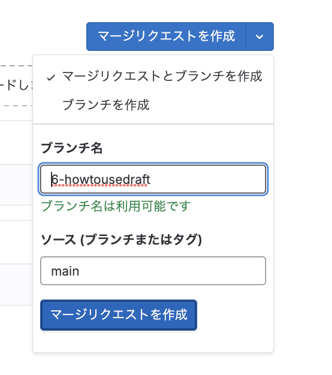
まだ、編集をしていないのにマージリクエストとは？と思ったが、どうやらDraftでのMRを作成してくれるらしい。 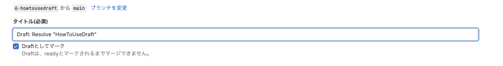
下書きのMRと呼ばれ、DraftでのMRとは、Draftを解除してから出ないとマージすることができない状態になる。 マージはまだしたくないが、RVを欲しい時などに利用される。 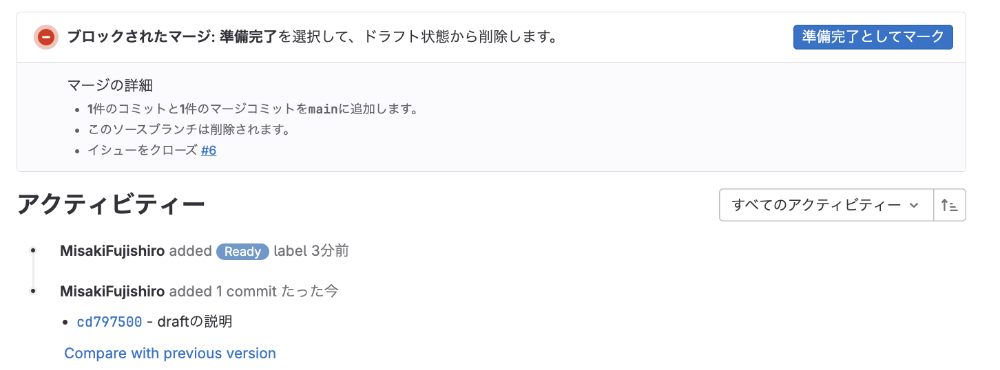
SquashAndMerge¶
複数のCommitについて、マージする際に1つのコミットにまとめることができる機能。 例えば、RVで修正が入った場合や作業単位でコミットを細かくしていた場合、マージする際にはコミットをまとめたい場合がある。
クライアント側でPushする際にRebaseを利用してCommitをまとめることができるが、Squashはマージをする際に複数のコミットをマージする機能
例えば、すでに２つのコミットをしているブランチでPushした場合のグラフは以下。 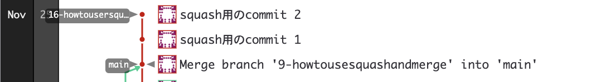
Mergeの際にSquashにチェックを入れてマージする。 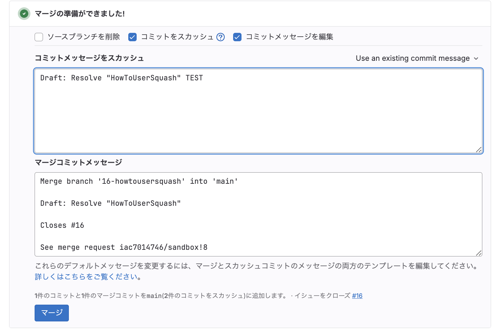
以下のように２つあったコミットが1つにまとまっている。元々のブランチを残しておくと、そちらは2つのコミットが残った状態になっている。 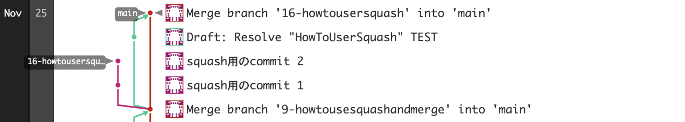
ブランチの管理¶
masterなどの特定ブランチへのPushやMergeは制御する必要がある。 GitLabでmasterへのPushを防ぐ を参考にすることで、マージやPushのメンバーを制御することができる。
事前準備¶
gitlabの新規アカウント作成
新規アカウントをDevメンバーとしてPJに招待
Pushの禁止¶
テスト用のProtectedというブランチを作成しておく、設定＞リポジトリ＞Protected Branchから、ProtectedBranchを設定する。
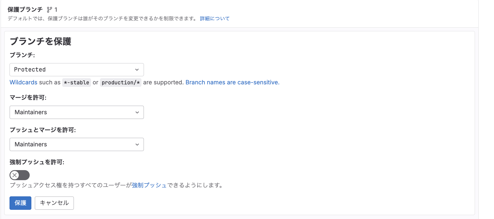
Dev Userから、Fileをアップロードしてみる。 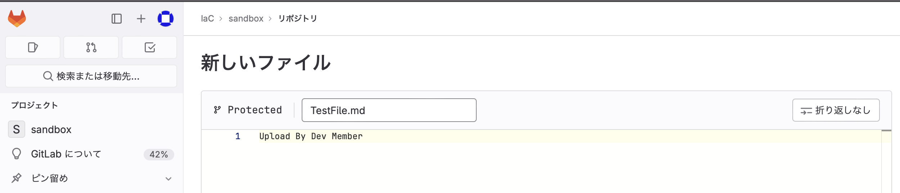
そうすると、MergeRequestが自動で作成される。 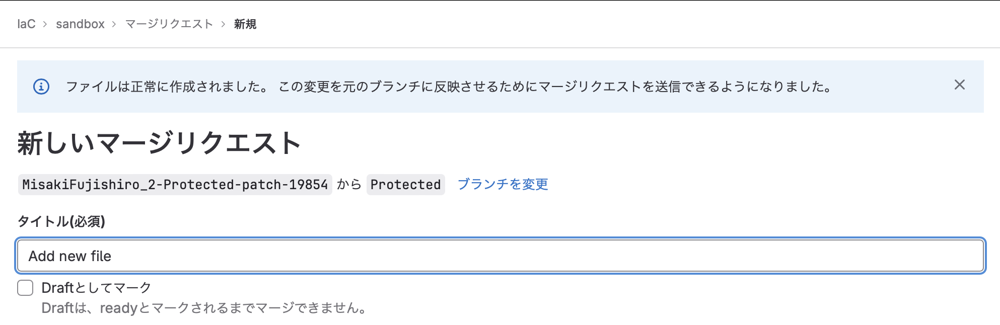
グラフを見てみても、Protected BranchへUploadしたはずが、自動で新しいブランチが切られてMRが作成されている。 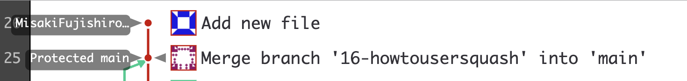
マージの許可もMaintainerに絞っているので、DevメンバーではMergeできないが、MaintainerではMergeできる。 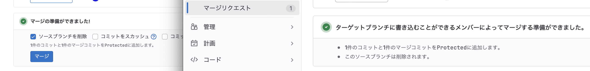
今回はGUIから実施したが、CLIから実施するとYou don't have Permissionとなって、失敗するらしく、MRも自動で作成されない。
MergeRequestの承認¶
Ultimateの機能であるが、特定のブランチに対して、DeveloperのPushやマージを禁止することができる。 【Github】勝手にマージされないようにブランチを保護したを参考にすることでMergeRequestの際にさらに詳細なルール設定を行うことができる。
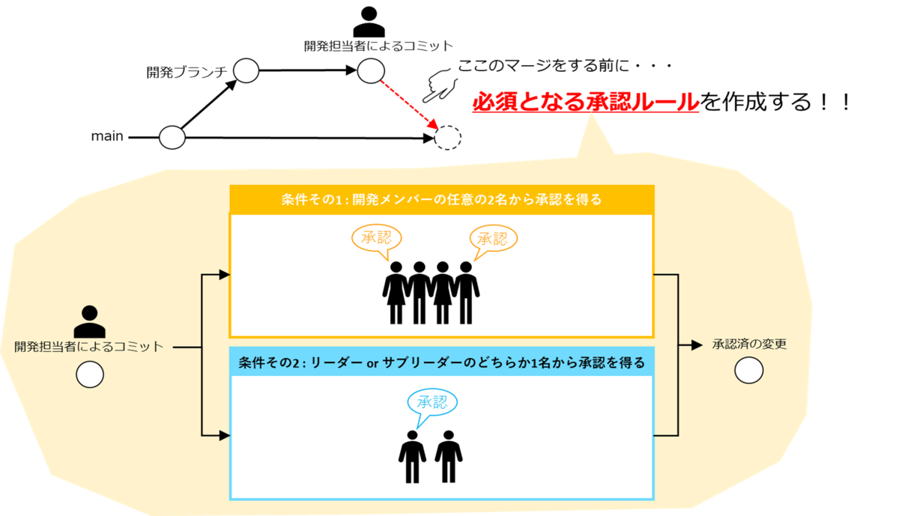 GitとCI/CDに関する知識ゼロのSEが、GitLabでマージリクエストの承認ルール機能をちょっとだけ試す (2023/07/05 更新)
Tips¶
テンプレート作成¶
Issueのテンプレートの作成方法¶
Issue Templateを作る Issue作成時に、テンプレートを利用できるようになる。 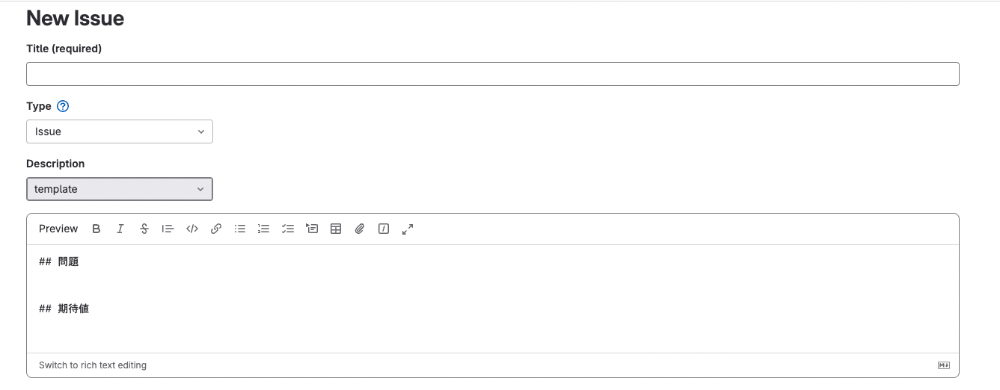
MRのテンプレート作成方法¶
MargeRequestもテンプレートを作成することができる。 気軽に追加できて5W1Hで書けるGitHub/GitLabのIssue/プルリクテンプレートを作った
クイックアクション¶
Issueのコメント欄に所定の形式でコマンドを記述すると、各種設定値を設定することができる。この機能をクイックアクションと呼ぶ。
/assign @<アサインしたいユーザー名>：タスクにメンバーをアサイン
/estimate <1d 1h 1m >：見積り時間を設定する
/spend <+1d>：実施時間を追加、削減
/tableflip：(╯°□°)╯︵ ┻━┻ちゃぶ台返しできる
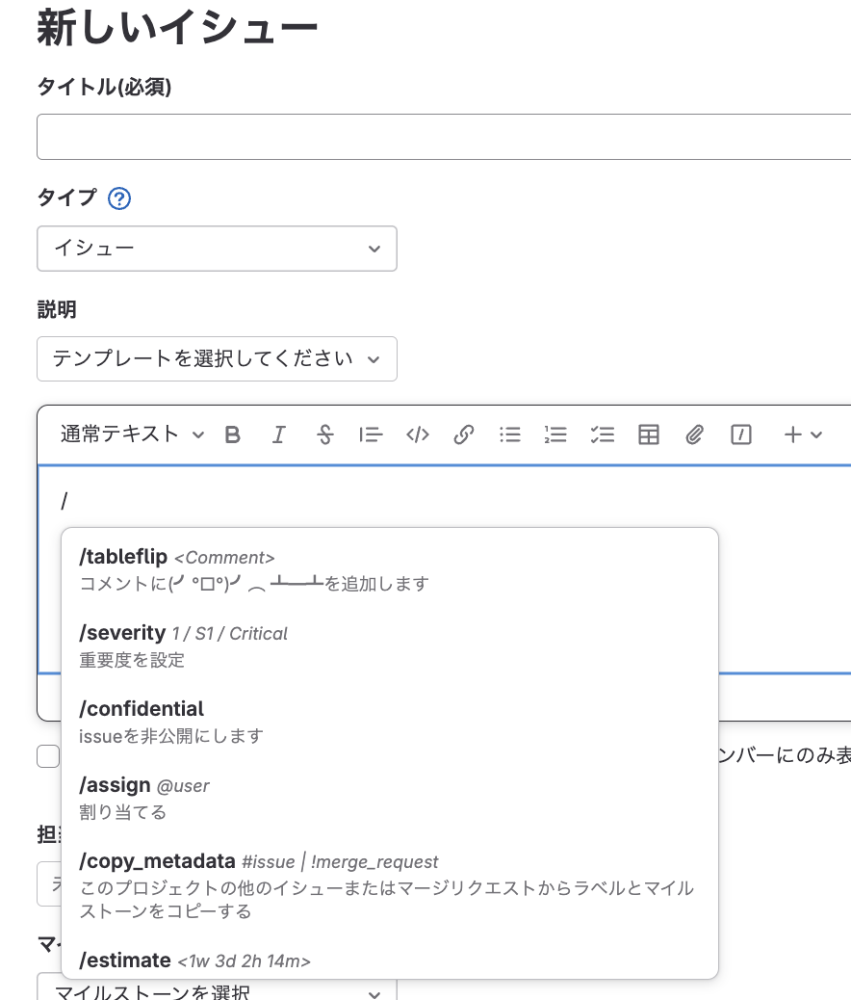
クイックアクションを利用すると、簡単な稼働管理をすることもできる。 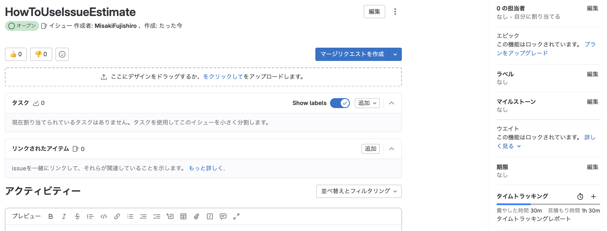
テンプレートとクイックアクションを組み合わせることで、ラベルの付与から、アサインなど初期でgitlabで設定したい内容までテンプレート化することができる。